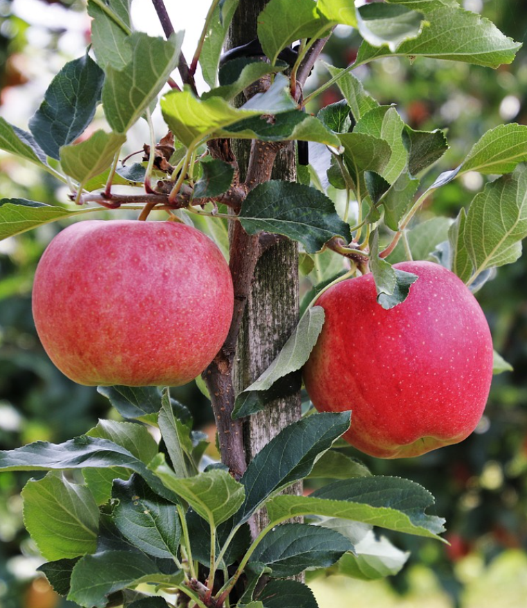

jonatán alma
1800-ban keletkezett az USA-béli New York államban az Esopus Spitzenburg, régi klasszikus amerikai
almafajta magoncaként. Jonathan Hasbrouck hívta fel rá Judge Buel figyelmét, aki a felfedező iránt
tiszteletből róla nevezte el az új fajtát. Buell 1829-ben már szaporította a Jonathant, bemutatásra
1864-ben került. Európába is igen régen eljutott, a 20. század elején már ismert volt és az európai
almatermesztés meghatározó fajtájává vált, jelentőségét sokáig meg is tartotta. Magyarországon még
tovább megtartotta vezető szerepét, még abban az időben is, amikor Európa többi részén az ültetvényekben
korszerűbb fajtákra cserélték. A magyar almatermesztés legfőbb fajtája volt, mivel a keleti piacokon
kiemelkedő íze,zamata ellensúlyozta hiányosságait egy ideig. Jelenleg a hazai almaültetvények 10-20%-át
alkotja a Jonathan és egyéb klónjai,de sajnálatosan folyamatosan kiszorul a termesztésből.
ez is